| participant_ID | mean.acc | mean.self | study | AGE | SHIPLEY | HLVA | FACTOR3 | QRITOTAL | GENDER | EDUCATION | ETHNICITY |
|---|---|---|---|---|---|---|---|---|---|---|---|
| studytwo.1 | 0.4107143 | 6.071429 | studytwo | 26 | 27 | 6 | 50 | 9 | Female | Higher | Asian |
| studytwo.10 | 0.6071429 | 8.500000 | studytwo | 38 | 24 | 9 | 58 | 15 | Female | Secondary | White |
| studytwo.100 | 0.8750000 | 8.928571 | studytwo | 66 | 40 | 13 | 60 | 20 | Female | Higher | White |
| studytwo.101 | 0.9642857 | 8.500000 | studytwo | 21 | 31 | 11 | 59 | 14 | Female | Higher | White |
| studytwo.102 | 0.7142857 | 7.071429 | studytwo | 74 | 35 | 7 | 52 | 18 | Male | Higher | White |
| studytwo.103 | 0.7678571 | 5.071429 | studytwo | 18 | 40 | 11 | 54 | 15 | Female | Further | White |
2 Introduction to visualization
Warning
Under construction
2.1 Overview
Welcome to our overview of the materials you will work with in our data visualization class in PSYC401 Week 8. This week, we will focus on perspectives and practices in data visualization.
Our materials are designed to help you to think about what you are doing, to understand the aims of the practical steps, as well as to learn about producing professional effective data visualizations.
We will continue to work with data collected for the Clearly understood project because we think that working with these data in this research context will help you to make sense of the data, and to see why we ask you to practise the skills we are teaching.
You can read a bit more about the project and the project data in Chapter 1.
As we work together, we will be revisiting some of the ideas and techniques you have seen in previous classes. This is to give you the opportunity to consolidate your learning. We will be extending your development with some new ideas to strengthen your skills.
2.2 Our learning goals
This week, we focus on both developing your critical thinking and strengthening your practical skills in data visualization.
Our learning objectives: — what are we learning about?
We are working together to help you:
- Goals — Formulate questions you can ask yourself to help you to work effectively
- Audience — Understand the psychological factors that affect your impact
- Development — Work reflectively through a development process
- Implement — Produce visualizations in line with best practice
Our assessment targets: — how do you know if you have learned?
We are working together so you can:
- Goals — Identify a set of targets for a development process in your professional teams
- Audience — Explain what you need to do to make a visualization effective
- Development — Locate yourself within the stages of the development process
- Implement — Produce visualizations that look good and are useful
2.3 Learning resources
You will see next links to the lectures we created to explain the concepts we want you to learn about and the practical visualization skills we want you to develop (Section 2.3.1), then information about the practical materials we have provided to help you to practise your skills (Section 2.3.2).
All the links to the lecture videos, the lecture slides, and everything you need for your practical work can also be found in the Week 8 files folder on Moodle here
In Section 2.4, we present the lecture slide points. We do this here because we can share the code we used to generate the plots we use in some of the slides 1
Tip
Linked resources include:
- In Chapter 3, we present a more extensive discussion of data visualization, elaborating on some ideas, incorporating additional example plots and enabling you to work with alternate data-sets. This is provided as optional reading and may support more advanced development for students interested in future professional roles involving data analysis or data visualization.
- In the PSYC403 Week 8, I present a lecture that outlines some perspectives or useful ways of thinking about data visualization: the history; the context in professional work; and what research suggests are effective ways to produce visualizations. You can access the resources for that class here.
2.3.1 Lectures
The lecture material for this week is presented in four short parts. Click on a link and your browser should open a tab showing the Panopto video for the lecture part.
You can download the slides we presented in the lecture in two different formats, depending on what you think will be most useful to you:
- Download the slides exactly as they appear in the lecture from this link. The .html file can be opened and viewed in any web browser (e.g., Chrome, Firefox, Safari).
- Or you can download a printable Word .docx presentation of the slides from this link. The .docx can be opened in Microsoft Word. The figures will not appear exactly as they do in the lecture recording because Word cannot cope with images so well but the trade-off is that you get a document you can print and edit to add notes.
2.3.2 Practical materials
We have collected the practical materials together into a folder.
The folder includes the data files:
study-one-general-participants.csvstudy-two-general-participants.csv
and .R code files:
401-visualization-how-to.R401-visualization-workbook.R
You will use these files for your practical learning.
You can download the .R files and the data .csv files in a single folder, using the link here.
Or you can download the files as individual files from the module Moodle page for PSYC401.
Once you have downloaded the file folder, you will need to upload it to the R-Studio server to access and use the R files.
2.3.2.1 The how-to guide
In the how-to guide:
401-visualization-how-to.R
we show you how to do everything you need to do in the practical workbook (see Section 2.3.3). The guide comprises an .R file 401-visualization-how-to.R with code and advice.
The code in the .R file was written to work with the data file
study-one-general-participants.csv.
Tip
Work through the steps in the
how-toguide first, this practice will help you to understand what you need to do for theworkbooktasks.The
how-toguide and theworkbookhave similar structures. This is intentional: so that you can copy and adapt code from thehow-toguide to do the practical tasks in theworkbook.
2.3.3 The workbook
In the workbook:
401-visualization-workbook.R
you will work with the data file
study-two-general-participants.csv
We split .R scripts into parts, tasks and questions.
For this class on data visualization practices, our practical materials have two aims:
- Helping you to learn about data visualization;
- Helping you to learn how to help yourself by accessing, evaluating and exploiting the rich R knowledge ecosystem.
This means that in both the how-to and the workbook the different parts concern different sources of online information and how to access each.
In the how-to and the workbook we look at methods to produce visualizations that display information about both summary statistics (e.g., the average outcome) and raw or individual outcome variability. We explain why we should visualize data like this in the lecture (as you can see in Section 2.3.1 or Section 2.4).
Specifically, the materials are written to support learning how to work with visualizations called boxplots and rain cloud plots. These are popular data visualization techniques so it is important to learn how to build them and how to interpret them. If you have already been introduced to them, you will find that our materials here show how to edit or polish the visualizations to make them more effective.
There are three main sources of information you can access for free online.
The people who write software like the
{tidyverse}or{ggplot2}libraries provide manuals, reference guides and tutorials. This information is often written as free web books, or as hard copy books.These people, and often ther people, may write tutorials or guides or teaching materials designed to show learners (like us) how to use R functions or do certain things using R. They may present these tutorials or guides as web books, blog sites or video tutorials e.g. on Youtube or TikTok.
Many post questions and answers to discussion forums like Stackoverflow.
Learning how to find, understand and use this information teaches two lessons:
- A lot of scholarly and technical information is online and free.
- Learning how to access this information is a key way that most professionals work out what they want to do and how they can do it.
In our practical materials, we look at how you can:
- search for and find relevant information;
- learn how to understand the tools using the information shared through online sources;
- work with example or demonstration code, adapting it for your own purposes.
Tip
This process of adapting demonstration code is a process critical to data literacy and to effective problem solving in working with data in psychological science.
Part 3 in the workbook focuses on locating and using {ggplot2} reference information to learn how to build box plots.
Part 4 in the workbook focuses on locating and using online tutorial information or how-to guides to build rain cloud plots. This kind of plot incorporates elements of the boxplot, the scatterplot and the density plot to give the viewer summary information about the distribution of scores on a variable while also giving information about the variability of outcomes.
Part 5 in the workbook focuses on using information available in the public discussion Stackoverflow so that you can learn how to export the plots you make, in order to include them in reports.
The activity 401-visualization-workbook.R file takes you through the tasks, one by one.
If you are unsure about what you need to do, check the advice in 401-visualization-how-to.R.
You will see that you can match a task in the activity to the same task in the how-to. The how-to shows you what function you need and how you should write the function code. You will need to change the names of the data-set or the variables to complete the tasks in the activity.
2.3.4 The data files
Each of the data files we will work with has a similar structure.
Here are what the first few rows in the data file study-two-general-participants.csv looks like:
You can see the columns:
participant_IDparticipant codemean.accaverage accuracy of response to questions testing understanding of health guidancemean.selfaverage self-rated accuracy of understanding of health guidancestudyvariable coding for what study the data were collected inAGEage in yearsHLVAhealth literacy test scoreSHIPLEYvocabulary knowledge test scoreFACTOR3reading strategy survey scoreGENDERgender codeEDUCATIONeducation level codeETHNICITYethnicity (Office National Statistics categories) code
2.3.5 The answers
After the practical class, you will be able to download the answers version of the workbook here.
The answers version will present my answers for questions, and some extra information where that is helpful.
2.4 Lecture notes
Some people find it easier to read notes than to watch video recordings. This is why we also include the lecture notes here.
Tip
In these notes, I provide notes on the code steps that result in plots.
- Click on the
Notestab to see them.
2.4.1 Our lesson plan
- Identify your goals
- Think about your audience
- Develop reflectively
- Implement good practice
2.4.2 Our learning objectives: — what are we learning about?
We are working together to help you:
- Goals — Formulate questions you can ask yourself to help you to work effectively
- Audience — Understand the psychological factors that affect your impact
- Development — Work reflectively through a development process
- Implement — Produce visualizations in line with best practice
2.4.3 Our assessment targets: — how do you know if you have learned?
We are working together so you can:
- Goals — Identify a set of targets for a development process in your professional teams
- Audience — Explain what you need to do to make a visualization effective
- Development — Locate yourself within the stages of the development process
- Implement — Produce visualizations that look good and are useful
2.4.4 What are our goals – Questions to help you to work effectively
Tip
- We begin by thinking about the questions you will ask yourself when you need to decide what you will do
- We build, here, on the insights developed by A. Gelman & Unwin (2013).
2.4.5 What are our goals?
- Why don’t we just use the good enough easy to produce plots in Excel? \(\rightarrow\) Why bother?
- Why don’t we just produce a summary table? \(\rightarrow\) Why bother?
- Are we engaged in making beautiful graphics or informative displays or both? \(\rightarrow\) What are we doing?
- In PSYC403, we look at \(\rightarrow\) Perspectives: the context and history of thinking about visualization
2.4.6 Visualize to enable comparison
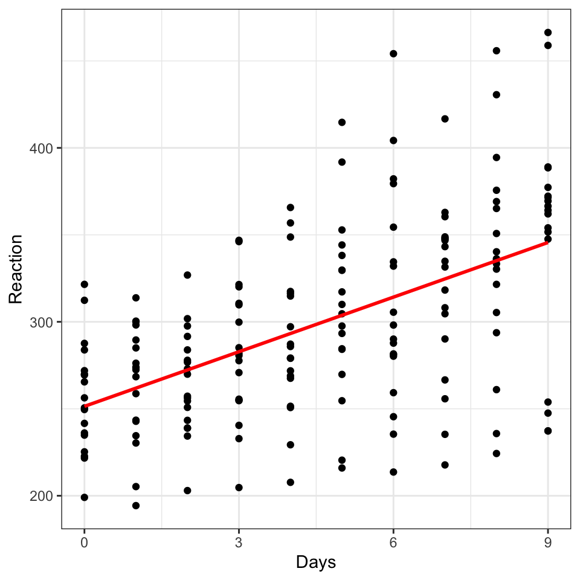
sleepstudy data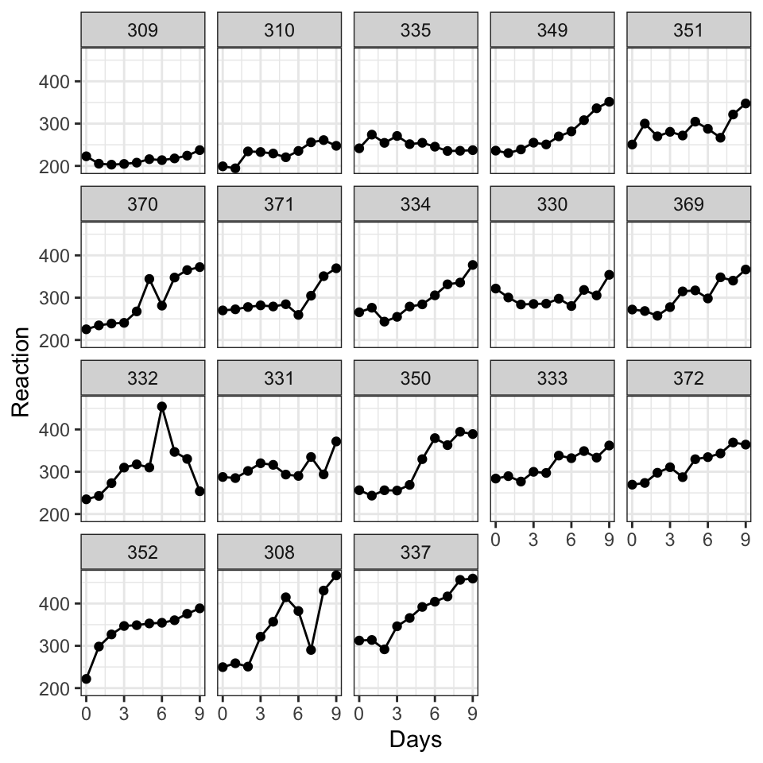
2.4.7 What are our goals? — What are our jobs?
- Data visualization workers: we may aim to get and keep the attention of our audience, to tell a story, to persuade our viewers
- Data analysis workers: we may aim to enable our audience to understand our data, our findings, and to discover more for themselves
2.4.8 What are our goals? — Where or when are we in our process?
- Sometimes in a workflow, we are quickly sketching draft visualizations: exploring, for ourselves, or with others, what we can see in our data
- Sometimes, we are ready to present our visualization to a wider audience: we aim to share a polished visual object
2.4.9 What are our goals? — Discovery
Discovery goals
- Do we need an overview? – To get a sense of what is in the data, and to check our assumptions
- Are we looking for the unexpected? – Comparing groups to check for variability, exploring data open to surprises
2.4.10 What are our goals? — Communication
Communication goals
- What do we need our audience to understand?
- What story are we telling?
- Do we need to attract attention or stimulate interest?
2.4.11 Think about your audience – An evidence based account of what works
Tip
- We will produce more effective visualizations if we think about how our audience sees, and what they expect (Franconeri et al., 2021)
- Check out the PSYC403 Perspectives lecture for more in-depth explanation; here, I present a selective summary
2.4.12 The human visual system is highly developed
- Your audience can look at your visualization
- And quickly and easily extract statistical information from what you show
- You look at a scatterplot and see the minimum, maximum and mean heights of the points

2.4.13 Communicating uncertainty is critical
- As scientists, we think about uncertainty all the time
- We quantify and typically show uncertainty over estimates e.g. average differences
- We should also show and think about outcome variability
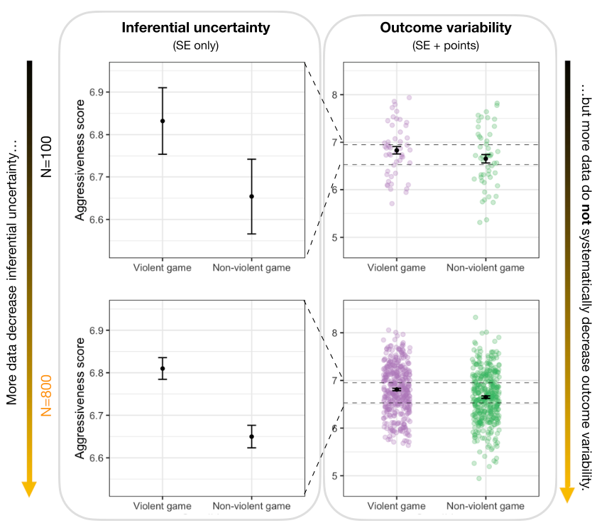
2.4.14 Consider accessibility from the start
- The first row shows a scatterplot encoded with two colors, green and orange
- People with typical vision can see that the green dots have a steep positive correlation and the orange dots make a flat line
- We use colour blindness friendly colour palettes

2.4.15 Development – Work reflectively through a development process
Tip
- Your first question is always going to be: (why) do we need to make a plot?
- Your answer will evolve through a development process that will gradually reveal the characteristics of your data
2.4.16 The benefits of investing in the development process
- Identifying your goals enables you to understand what you are doing and why
- Through the development process, you may create different versions — iterations — of a plot
- This iterative work benefits both you and your audience (A. Gelman et al., 2002; Kastellec & Leoni, 2007)
2.4.17 The benefits of investing in the development process
Tip
- As you iterate, reflect on what your goals are, what your audience needs and expects, and how each plot version moves you closer to effective discovery or communication
- This reflection uncovers what is interesting, useful and beautiful about your data
2.4.18 Scientific thinking and data visualisation
We can use text and tables to communicate specific values but visualizations help us to:
- stimulate thinking
- discover what is unexpected
- communicate scale and complexity
- make comparisons to show how results vary
- display uncertainty about estimates
2.4.19 Anscombe (1973): visualizations show data features quickly and vividly
| x1 | x2 | x3 | x4 | y1 | y2 | y3 | y4 |
|---|---|---|---|---|---|---|---|
| 10 | 10 | 10 | 8 | 8.04 | 9.14 | 7.46 | 6.58 |
| 8 | 8 | 8 | 8 | 6.95 | 8.14 | 6.77 | 5.76 |
| 13 | 13 | 13 | 8 | 7.58 | 8.74 | 12.74 | 7.71 |
| 9 | 9 | 9 | 8 | 8.81 | 8.77 | 7.11 | 8.84 |
| 11 | 11 | 11 | 8 | 8.33 | 9.26 | 7.81 | 8.47 |
| 14 | 14 | 14 | 8 | 9.96 | 8.10 | 8.84 | 7.04 |
| 6 | 6 | 6 | 8 | 7.24 | 6.13 | 6.08 | 5.25 |
| 4 | 4 | 4 | 19 | 4.26 | 3.10 | 5.39 | 12.50 |
| 12 | 12 | 12 | 8 | 10.84 | 9.13 | 8.15 | 5.56 |
| 7 | 7 | 7 | 8 | 4.82 | 7.26 | 6.42 | 7.91 |
| 5 | 5 | 5 | 8 | 5.68 | 4.74 | 5.73 | 6.89 |
| x1 | x2 | x3 | x4 | |
|---|---|---|---|---|
| Min. : 4.0 | Min. : 4.0 | Min. : 4.0 | Min. : 8 | |
| 1st Qu.: 6.5 | 1st Qu.: 6.5 | 1st Qu.: 6.5 | 1st Qu.: 8 | |
| Median : 9.0 | Median : 9.0 | Median : 9.0 | Median : 8 | |
| Mean : 9.0 | Mean : 9.0 | Mean : 9.0 | Mean : 9 | |
| 3rd Qu.:11.5 | 3rd Qu.:11.5 | 3rd Qu.:11.5 | 3rd Qu.: 8 | |
| Max. :14.0 | Max. :14.0 | Max. :14.0 | Max. :19 |
| y1 | y2 | y3 | y4 | |
|---|---|---|---|---|
| Min. : 4.260 | Min. :3.100 | Min. : 5.39 | Min. : 5.250 | |
| 1st Qu.: 6.315 | 1st Qu.:6.695 | 1st Qu.: 6.25 | 1st Qu.: 6.170 | |
| Median : 7.580 | Median :8.140 | Median : 7.11 | Median : 7.040 | |
| Mean : 7.501 | Mean :7.501 | Mean : 7.50 | Mean : 7.501 | |
| 3rd Qu.: 8.570 | 3rd Qu.:8.950 | 3rd Qu.: 7.98 | 3rd Qu.: 8.190 | |
| Max. :10.840 | Max. :9.260 | Max. :12.74 | Max. :12.500 |
2.4.20 Anscombe (1973): visualizations show data features quickly and vividly
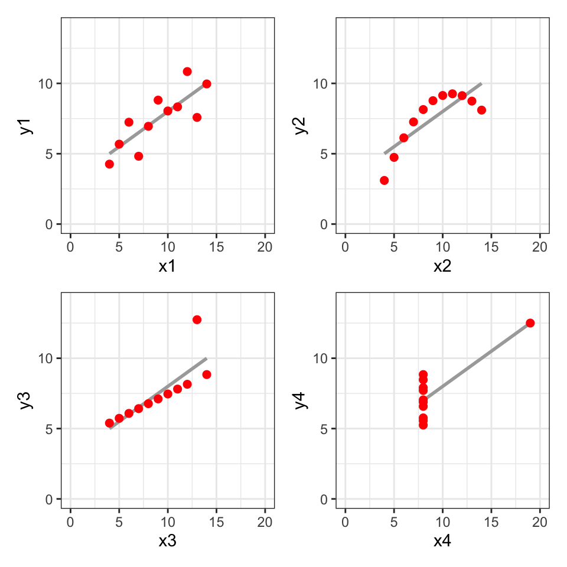
x,y datasets are identical when examined using summary statistics but we see how they vary when we use scatterplots to visualize them2.4.21 Matejka & Fitzmaurice (2017) give us the Datasaurus dozen
2.4.22 Develop visualizations to discover and communicate variability in outcomes
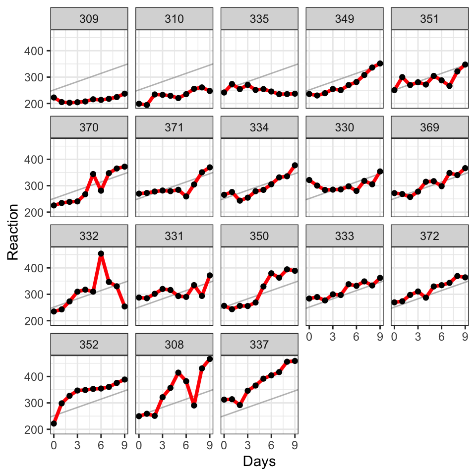
2.4.23 Reflect on kinds of uncertainty
- Scientists are often faced with the challenge of conveying uncertainty to their audiences (Hofman et al., 2020):
- Inferential uncertainty — the degree to which a particular summary statistic (e.g., a population mean) is known to the scientist
- Outcome uncertainty — how much individual outcomes vary (e.g., around the mean, regardless of how well it has been estimated)
- Inferential uncertainty can be reduced by collecting and analyzing more data, whereas outcome uncertainty cannot
2.4.24 As we work, reflect on the challenges of visualizing uncertainty
- The process through which we understand the world is characterized by assumptions, limitations, extrapolations, and generalizations, and this brings uncertainty (Van Der Bles et al., 2019)
- We often face the challenge of communicating this
2.4.25 The challenges of uncertainty
- Non-expert people will tend to overstate the impact of interventions and understate the variability of outcomes
- when they see visualizations like error bars that show
- mean and standard error values, that focus on inferential uncertainty (Hofman et al., 2020)
2.4.26 The challenges of uncertainty
- Expert scientists also overestimate the impact of interventions when they see standard visualizations that focus on inferential uncertainty: the illusion of predictability
- We can stimulate more accurate understanding if we show outcome variability (Zhang et al., 2023)
2.4.27 Variation and uncertainty — the importance, the challenges
Vasishth & Gelman (2021):
The most difficult idea to digest in data analysis is that conclusions based on data are almost always uncertain, regardless of whether the outcome of the statistical test is statistically significant or not
2.4.28 Variation and uncertainty — the importance, the challenges
a. Gelman (2015):
We must move beyond the idea that effects are ‘there’ or not and the idea that the goal of a study is to reject a null hypothesis. As many observers have noted, these attitudes lead to trouble because they deny the variation inherent in real social phenomena, and they deny the uncertainty inherent in statistical inference
2.4.29 We use visualizations to help us to see and understand the variation and the uncertainty in our data
- Results will vary: we should expect changes over time, or differences between individuals or between groups
- Knowledge is uncertain: outcomes will vary even when the average effect is precisely estimated
- We have the responsibility to accept and to express this uncertainty
2.4.30 Implement – Produce visualizations in line with best practice
Tip
- We combine our creative thinking with the flexibility of the Grammar of Graphics to produce effective plots
2.4.31 {ggplot2} means: the Grammar of Graphics Plot 2
- When we use the
{ggplot2}to draw plots, we are using tools developed with a philosophy of visualization in mind (Wilkinson, 2013; wickham2010?): The Grammar of Graphics - A grammar is a system of rules that allows people to collaborate and individuals to create
- We do not need to think about the grammar when we produce visualizations
- But it will help you to know that when we puzzle over how we do things, there are always reasons why we do things
2.4.32 A simple plot has many elements
- data and aesthetic mappings
- statistical transformations
- geometric objects
- scales
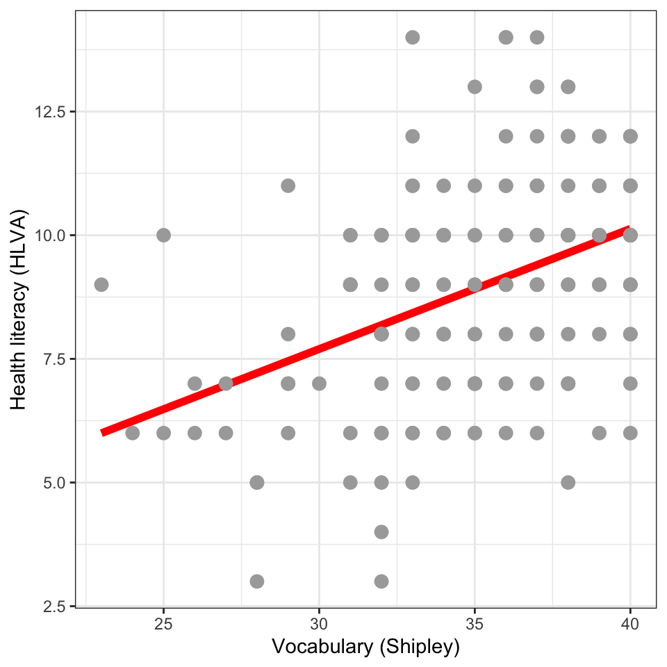
2.4.33 We begin with data: here, from the Health Comprehension project
| participant_ID | mean.acc | mean.self | study | AGE | SHIPLEY | HLVA | FACTOR3 | QRITOTAL | GENDER | EDUCATION | ETHNICITY |
|---|---|---|---|---|---|---|---|---|---|---|---|
| studyone.1 | 0.49 | 7.96 | studyone | 34 | 33 | 7 | 53 | 11 | Non-binary | Higher | White |
| studyone.10 | 0.85 | 7.28 | studyone | 25 | 33 | 7 | 60 | 11 | Female | Higher | White |
| studyone.100 | 0.82 | 7.36 | studyone | 43 | 40 | 8 | 46 | 12 | Male | Further | White |
| studyone.101 | 0.94 | 7.88 | studyone | 46 | 33 | 11 | 51 | 15 | Male | Higher | White |
| studyone.102 | 0.58 | 6.96 | studyone | 18 | 32 | 3 | 51 | 12 | Male | Secondary | Mixed |
| studyone.103 | 0.84 | 7.88 | studyone | 19 | 37 | 13 | 45 | 19 | Female | Further | Asian |
2.4.34 A simple plot has many elements
- When we code a plot, we tell R we want:
- to use
ggplot()to create a plot - using the data-set
clearly.one.subjects - and the variables
SHIPLEY, HLVA
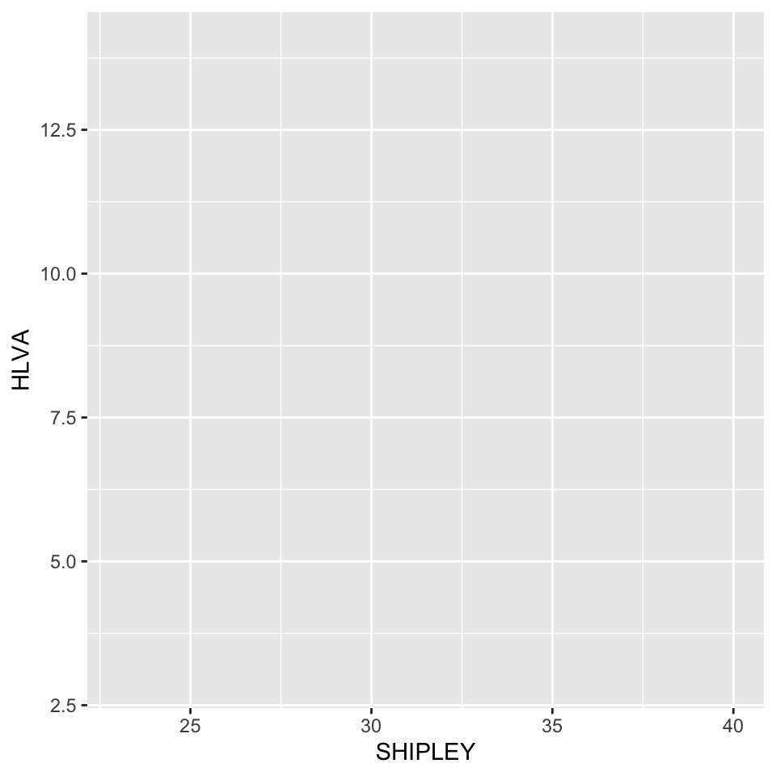
ggplot(data = clearly.one.subjects, aes(x = SHIPLEY, y = HLVA))- We bring the data-set and the variables
- We declare the aesthetic mappings:
SHIPLEYscore \(\rightarrow\) x-axis (horizontal: left-to-right position)HLVAscore \(\rightarrow\) y-axis (vertical: bottom-to-top position)
2.4.35 A simple plot has many elements
- When we code a plot, we tell R we want:
- to use a geometric object, like
geom_point - to display the data aesthetic mappings
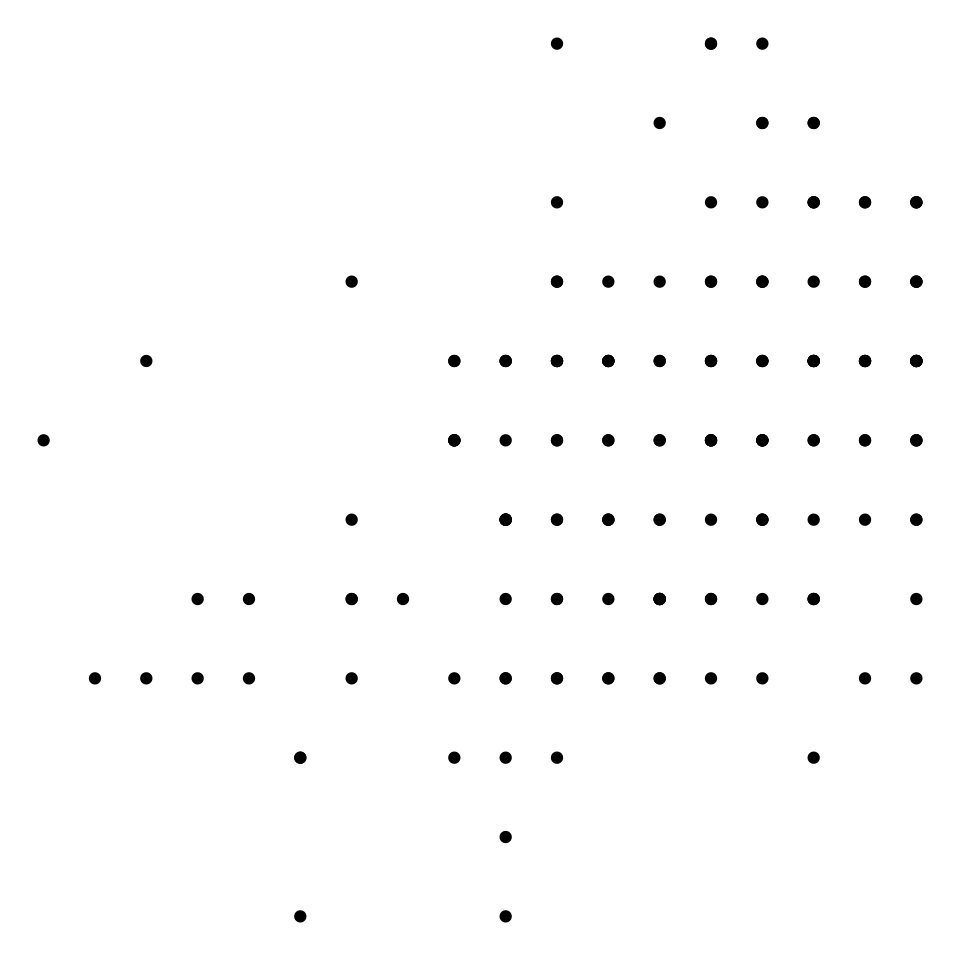
ggplot(data = clearly.one.subjects, aes(x = SHIPLEY, y = HLVA)) +
geom_point()- We add the
geom_point()to tell R to draw the information about theSHIPLEYandHLVAscores as points - Each point represents information about one participant in the
clearly.one.subjectsdata-set
SHIPLEYscore \(\rightarrow\) x-axis (horizontal: left-to-right position)HLVAscore \(\rightarrow\) y-axis (vertical: bottom-to-top position)
2.4.36 When we use {ggplot2} we work in layers
- The grammar of graphics define the components of a plot: the data, the mappings, and the geometric object
- Together, the data, mappings, and geometric object form a layer
- A plot may have multiple layers
2.4.37 When we use {ggplot2} we are in control and we can be creative
Tip
- Having a system of graphics: with components, layers and rules
- Releases us to be creative: changing a single feature at a time
2.4.38 Plot with layers: add a smoother
- Build a plot layer by layer
- We can begin by using points to display the vocabulary and health literacy scores for each person
- We add a layer using a smoother to show the average association between vocabulary and literacy

ggplot(data = clearly.one.subjects, aes(x = SHIPLEY, y = HLVA)) +
geom_point() +
geom_smooth()- We add the
geom_smooth()to tell R to represent the average trend for the association betweenSHIPLEYandHLVAscores - The line is drawn by
{ggplot2}which calculates a statistical transformation - Here, the transformation summarizes the association for different ranges of
SHIPLEYvocabulary scores
2.4.39 Defaults and arguments
clearly.one.subjects %>%
ggplot(aes(SHIPLEY, HLVA)) +
geom_smooth() +
geom_point()- The
{ggplot2}library supplies default values - So we do not need to tell R how to do every thing
- We do not need to tell R that the points in a scatterplot:
- should represent the data aesthetic mappings in Cartesian (x-horizontal, y-vertical) 2-dimensional space
- and should be black in colour
2.4.40 Defaults and arguments
clearly.one.subjects %>%
ggplot(aes(SHIPLEY, HLVA)) +
geom_smooth() +
geom_point(colour = "darkgrey", size = 3)- We can over-ride the defaults by supplying arguments, entering values inside the brackets in the function calls
geom_point(colour = "darkgrey", size = 3)tells R we want:
- dark grey points when the default is black
- points that are 3x larger than the default size
2.4.41 When we use {ggplot2} we are in control and we can be creative
Tip
- We can add layers, control the appearance of each component
- To construct more effective plots
- The plots can be more effective because we develop them in an iterative process
- in which we reflect on our goals and the needs of our audience
2.4.42 We can use colour
- When we code a plot, we tell R we want:
- to display data about people with different education levels
- distinguishing education level by colour
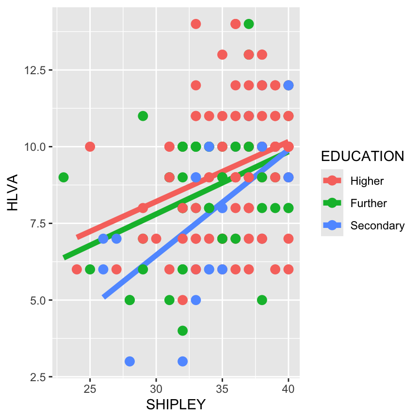
clearly.one.subjects %>%
ggplot(aes(x = SHIPLEY, y = HLVA,
group = EDUCATION, colour = EDUCATION)) +
geom_smooth(method = "lm", se = FALSE,
linewidth = 2, alpha = .75) +
geom_point(size = 3)group = EDUCATION, colour = EDUCATIONtells R to:
groupthe data byEDUCATIONlevelcolourthe points for people with different levels of education in different colours
2.4.43 Method, size, transparency
clearly.one.subjects %>%
ggplot(aes(x = SHIPLEY, y = HLVA,
group = EDUCATION, colour = EDUCATION)) +
geom_smooth(method = "lm", se = FALSE,
linewidth = 2, alpha = .75) +
geom_point(size = 3)method = "lm", se = FALSEtells R what method to use to draw the smoother linelinewidth = 2makes the width of the smoother line 2 x larger than the defaultalpha = .75makes the line .75 x the opacity of the default (i.e. a. bit more transparent)- Learn to edit: shape, size, transparency and colour
2.4.44 We facet plots to enable comparisons
- It is often easier to compare trends
- By presenting a separate plot for each condition or group
- Showing the separate plots in a grid side-by-side
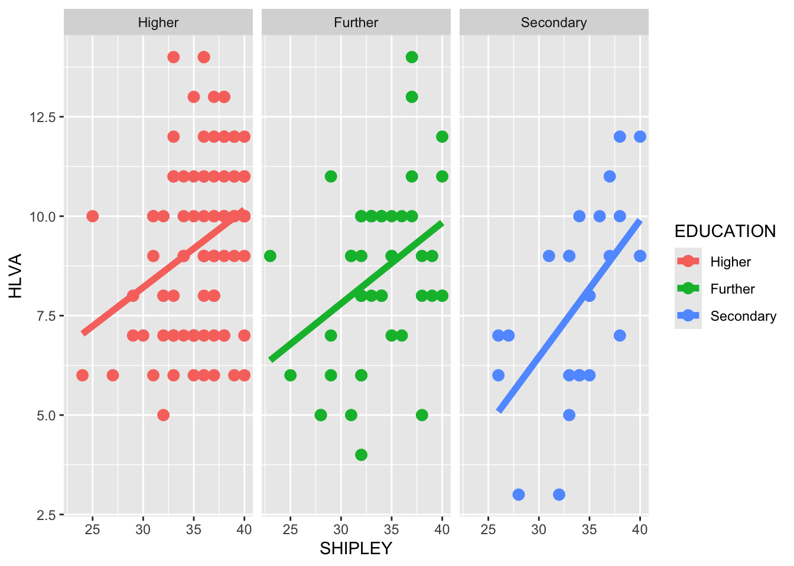
clearly.one.subjects %>%
ggplot(aes(x = SHIPLEY, y = HLVA,
group = EDUCATION, colour = EDUCATION)) +
geom_smooth(method = "lm", se = FALSE,
linewidth = 2, alpha = .75) +
geom_point(size = 3) +
facet_wrap(~ EDUCATION)facet_wrap(~ EDUCATION)tells R to split the data byEDUCATIONlevel- And show a separate plot for each
EDUCATIONlevel group side-by-side for easy comparison
2.4.45 We can guide our audience
- We do not present visualizations in isolation
- We present plots embedded in the context of labels and titles
- We use the text to guide the viewer
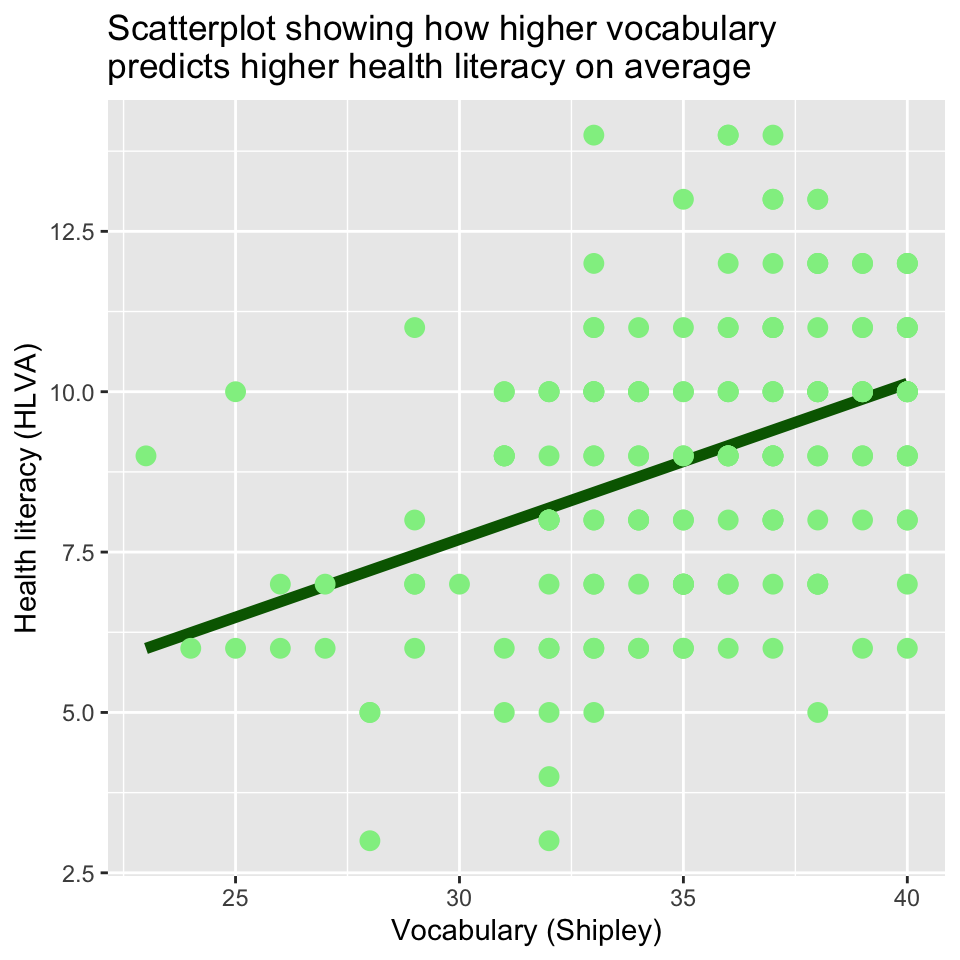
clearly.one.subjects %>%
ggplot(aes(x = SHIPLEY, y = HLVA)) +
geom_smooth(method = "lm", se = FALSE,
colour = "darkgreen", linewidth = 2, alpha = .75) +
geom_point(size = 3, colour = "lightgreen") +
labs(x = "Vocabulary (Shipley)", y = "Health literacy (HLVA)",
title = "Scatterplot showing how higher vocabulary\npredicts higher health literacy on average")- We use the
labs()function to add: the plot title and the labels for the x-axis and y-axis - We edit the title so that the viewer can see what we want them to see
- We use
\nto make the title fit on two lines
2.4.46 We annotate plots to direct attention
- We can direct the attention of our audience to key features of our data
- By adding annotations like text and lines
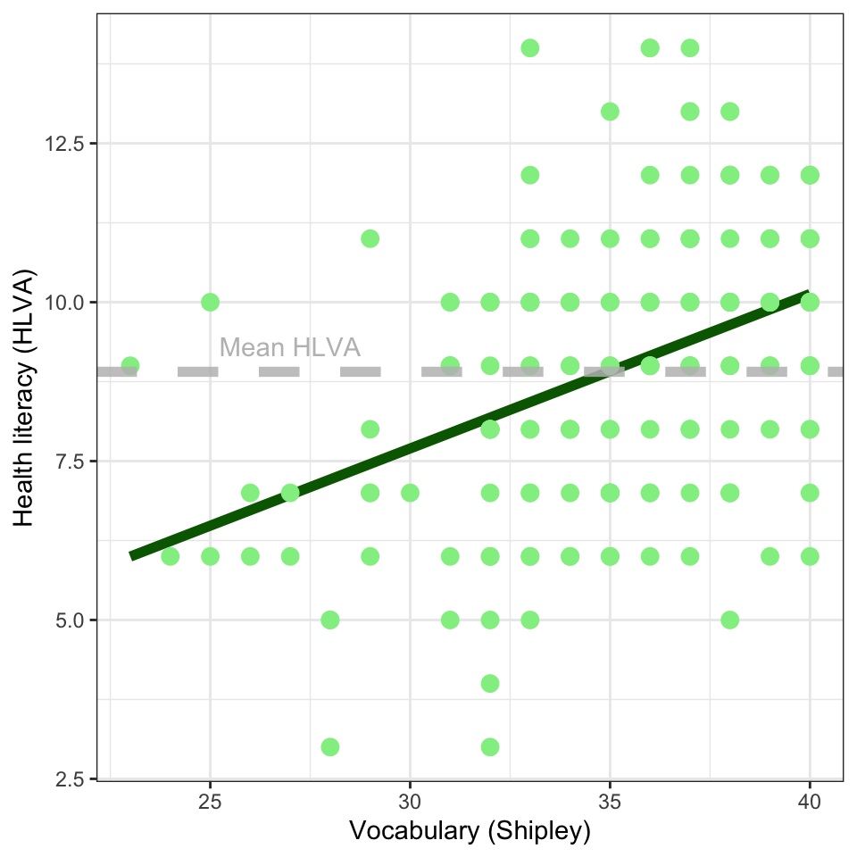
clearly.one.subjects %>%
ggplot(aes(x = SHIPLEY, y = HLVA)) +
geom_smooth(method = "lm", se = FALSE,
colour = "darkgreen", linewidth = 2, alpha = .75) +
geom_point(size = 3, colour = "lightgreen") +
labs(x = "Vocabulary (Shipley)", y = "Health literacy (HLVA)") +
geom_hline(yintercept = mean(clearly.one.subjects$HLVA),
linetype = "dashed",
linewidth = 2,
colour = "grey",
alpha = .85) +
annotate("text", x = 27, y = 9.3, label = "Mean HLVA", colour = "grey") +
theme_bw()geom_hline()adds a line to show mean health literacyannotate("text" ...)adds a text label
2.4.47 Extensions free our creativity
- The power of the Grammar of Graphics lies in the rules
- Developers can use the rules to expand our capacity to visualize data
- We add marginal histograms to our scatterplot to visualize associations and distributions

plot <- clearly.one.subjects %>%
ggplot(aes(x = SHIPLEY, y = HLVA)) +
geom_smooth(method = "lm", se = FALSE,
colour = "darkgreen", linewidth = 2, alpha = .75) +
geom_point(size = 3, colour = "lightgreen") +
labs(x = "Vocabulary (Shipley)", y = "Health literacy (HLVA)")
ggMarginal(plot, type = "histogram", fill = "lightgreen",
xparams = list(binwidth=2), yparams = list(binwidth=1))ggMarginal(plot, type = "histogram")enables us to show the distribution of scores on each variable- This helps our viewer to process the association and information about each variable (Franconeri et al., 2021)
2.4.48 Choose your plot theme
- We can choose a theme to adapt the look of the whole plot to suit our needs or the needs of our audience
![A grid of scatterplots: points are shown in grey, a smoother line is shown in red. Points represent the pairing of health literacy and vocabulary scores for each participant. An upward trend is apparent, such that higher vocabulary scores (on the x-axis) are associated with higher health literacy scores. The different plots illustrate different themes: (left) `theme_dark()`, background is shown in dark grey; (middle) `theme_bw()`, background is white with grey grid lines; and (right) `theme_classic()`, background is white with no grid lines.](visualization-intro_files/figure-html/fig-health-study-one-HLVA-SHIPLEY-1-themes-1.png)
theme_dark(); (middle) theme_bw(); and (right) theme_classic()2.4.49 Summary
You start your work with these questions:
- What are our goals?
- What does our audience need or expect?
You develop your visualization in a reflective process:
- Begin with a quick draft to show the distributions or make the comparisons you think about first
- Then reflect, and edit: does this enable me to discover sources of variability in my data?
- Then reflect, and edit: does this enable me to effectively communicate what I want to communicate?
- Then reflect, and edit: does this look good? – do my viewers tell me this works well?
Tip
I can only show you the potential for creative and effective visualization
- experiment and find what looks good and is useful to you
- seek out information – good places to start are:
We write the slides and this book in Quarto in R-Studio. Quarto scripts can be rendered as .html to share web-books like this one, or to share slides like those we use in presenting the lecture. One advantage of using Quarto is that we can share a plot and the code we used to generate the plot in the same page.↩︎